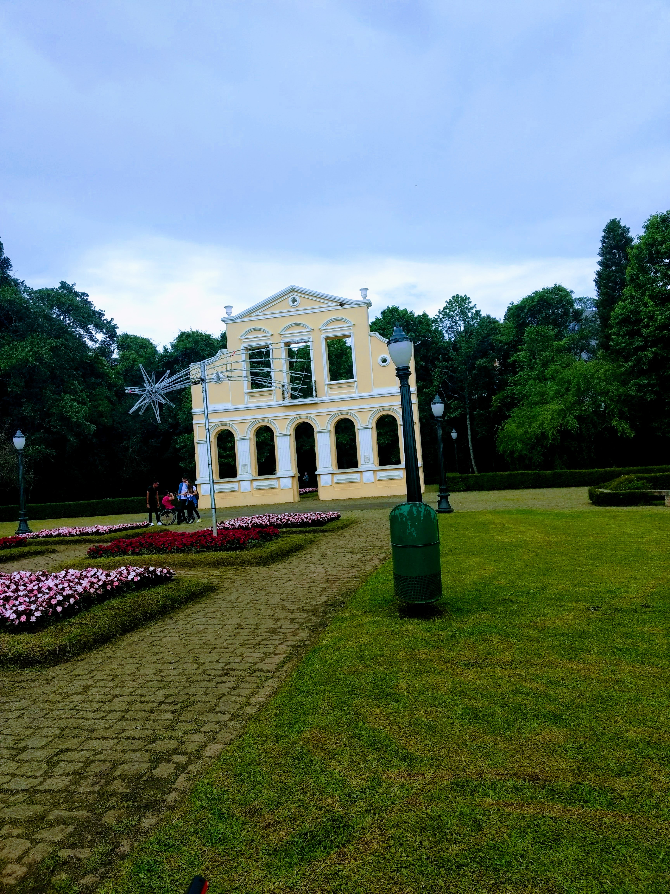
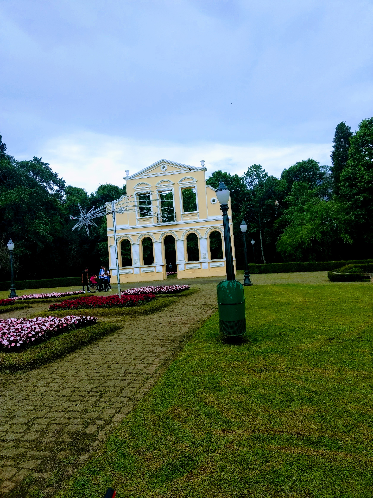

A relação campo-cidade é uma das mais importantes atualmente,ambos dois se necessitam, auxiliam e trazem a melhor qualidade para os moradores de ambos locais. Para ter um melhor ponto de vista, clique abaixo no topico que lhe interessar.
 
